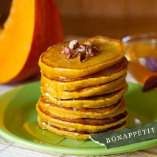
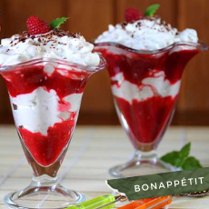
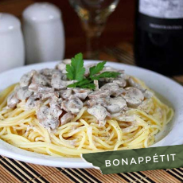
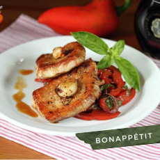
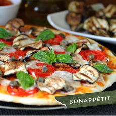
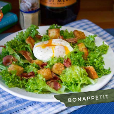
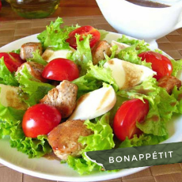
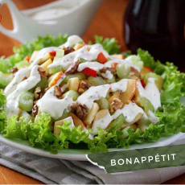
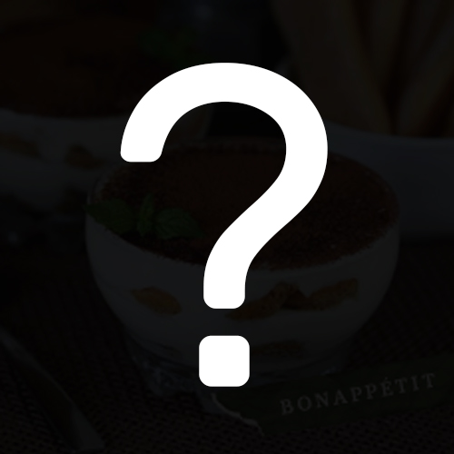

Рецепти
-
Свиня на грилі
Тірамісу – ніжний італійський десерт, що готується на основі вершкового сиру маскарпоне і бісквітних паличок савоярді, просочених кавою з алкоголем. Приготувати його можна в одній великій формі або в невеликих порційних креманках. Готувати такий десерт легше у великіій формі, а от подавати простіше у креманках, оскільки тірамісу, через його ніжну структуру, буває складно акуратно нарізати порційними шматками.
Рецепт
- Готуємо крем. Оскільки до складу крему входять сирі яйця, їх слід обов’язково добре помити содою і облити окропом. Жовтки відділити від білків. Білки поки що покласти в холодильник, а жовтки збити з цукром в світлу пишну масу.
- До збитих жовтків частинами додати маскарпоне кімнатної температури і щоразу акуратно дерев’яною ложкою чи лопаткою перемішувати його з жовтками, розтираючи сир об стінки миски, до утворення однорідної маси без грудочок.
- Холодні білки збити з дрібкою солі до стійких піків.
- Збиті білки в три заходи вмішати в сирну масу.
- У заздалегідь зварену і охолоджену каву додати алкоголь. Я додавала ром. Бісквітне печиво ненадовго, буквально на секунду, занурити в каву, щоб воно увібрало в себе трохи рідини, але повністю не розм’якло.
- I одразу викласти на дно форми, де будемо робити тірамісу.
- Поверх печива викласти половину підготовленого крему.
- На крем знову викласти змочене у каві бісквітне печиво.
- На печиво – крем, що залишився. Десерт покласти в холодильник мінімум на 4 год.
- Також такий десерт, як зазначалося вище, можна приготувати і в порційних креманках. В такому випадку я викладаю крем і бісквітне печиво в наступному порядку: крем - печиво - крем - печиво - крем.
- Перед подачею десерт вийняти з холодильника, щедро посипати какао-порошком або тертим чорним шоколадом і подавати до столу. Ніжний італійський десерт Тірамісу готовий.
Інгредієнти
- Cир маскарпоне - 500 г
- Цукор - 100 г
- Яйця великого розміру - 4 шт.
- Печиво савоярді - 24 шт. (200 г)
- Заварна кава - 300 мл (3 ч. л. з вершком на 300 мл води)
- Ром (кавовий лікер, коньяк, бренді) - 2-3 ч. л.
- Какао-порошок або тертий чорний шоколад - для посипки
-

Гарбузові оладки з корицею
Всім любителям гарбуза хочу запропонувати смачний і легкий в приготуванні рецепт гарбузових оладок з корицею. Такі оладки ще можна урізноманітнити такими додатковими інгредієнтами, як апельсинова чи лимонна цедра, сушена журавлина, родзинки і інше.
Рецепт
- Гарбуз очистити від шкірки, порізати кубиками і подрібнити в блендері до пюреподібного стану.
- Яйця збити вінчиком.
- До яєць додати гарбузове пюре і молоко.
- Все ретельно перемішати.
- В окрему посудину просіяти борошно, додати всі сухі інгредієнти (цукор, корицю, ванільний цукор, дрібку солі і розпушувач). Перемішати.
- Борошно частинами додати до гарбузової суміші, щоразу все ретельно перемішуючи.
- В результаті має вийти доволі густа суміш.
- На сковорідці розігріти зовсім трошки олії і столовою ложкою викласти оладки.
- Смажити оладки на малому вогні з обох боків до рум’яної скоринки. Теплі оладки при подачі полити медом чи кленовим сиропом і посипати грецькими горіхами. Також можна подавати їх зі сметаною. Гарбузові оладки з корицею готові.
Інгредієнти
- Гарбуз - 300-350 г
- Яйця - 2 шт.
- Пшеничне борошно - 200 г
- Молоко - 100 мл
- Цукор - 50 г (або за смаком)
- Кориця - 1 / 2 ч. л. (або за смаком).
- Ванільний цукор - 1 / 2 ч. л.
- Розпушувач для тіста - 1 ч. л.
- Дрібка солі
- Соняшникова рафінована олія - для смаження
-

Краннач
Краннач – смачний шотландський десерт, що складається з малинового пюре і збитих вершків. За оригінальним рецептом до вершків додаються підсмажені вівсяні пластівці та віскі, що робить цей десерт таким особливим. Із вказаної кількості інгредієнтів виходить 2-3 порції десерту.
Рецепт
- На сухій сковорідці підсмажити вівсяні пластівці до коричневого кольору і “горіхового” запаху. Смажити слід на малому вогні, постійно помішуючи, щоб пластівці не підгоріли.
- Малину разом з 1 ст. ложкою цукрової пудри подрібнити блендером до стану пюре.
- Охолоджені вершки вилити в холодну посудину і збити міксером до пишної маси. Потім додати 1 ст. ложку з вершком цукрової пудри і ретельно перемішати міксером. Збивати вершки слід на найменшій швидкості міксера, і при цьому уважно стежити, щоб їх не перезбити, інакше вони перетворяться на вершкове масло.
- До збитих вершків додати підсмажені вівсяні пластівці та коньяк і ретельно перемішати ложкою.
- В десертну посудину шарами викласти малинове пюре і збиті вершки (як на фото). За бажанням, десерт зверху можна притрусити чорним тертим шоколадом. Краннач готовий.
Інгредієнти
- Вершки (не менше 33% жирності) - 200 г
- Малина - 200 г
- Вівсяні пластівці - 3 повні ст. л.
- Цукрова пудра - 2 ст. л. з вершком (або за смаком)
- Віскі або коньяк - 1-2 ст. л.
-

Спагетті з вершково-грибним соусом
Мінімум продуктів, мінімум затраченого часу і зусиль, а в результаті – дуже смачна і ситна страва на щодень. Одним словом, рекомендую.
Рецепт
- Гриби помити і нарізати плястерками.
- Нарізані гриби викласти у розігріту сковорідку зі соняшниковою олією і на середньому вогні смажити приблизно 15 хв. За цей час рідина має повністю випаруватись і гриби зовсім трошки обсмажитись. Після цього до грибів додати соєвий соус…
- …і вершки. Посолити, поперчити за смаком і, помішуючи, тушкувати на середньому вогні 2-3 хв.
- В кінці додати вичавлений часник, перемішати і відставити з вогню.
- Спагеті відварити у підсоленій воді до готовності і відкинути на друшлак. Трошки води, в якій варилася паста, залишити, вона нам може знадобитись. Гарячий соус перемішати з гарячою пастою. Якщо після вимішування паста виходить липкою, їй не вистачає вологи, – долийте потрібну кількість збереженого «бульйону», де варився макарон. В результаті, після перемішування, паста має вийти достатньо вологою і неначе шовковистою. Спагеті з вершково-грибним соусом готові.
Інгредієнти
- Cпагеті - 350 г
- Шампіньйони - 500 г
- Нежирні вершки (у мене 15%) - 200 мл
- Соєвий соус - 2 ст. л.)
- Часник - 1-2 зубчики
- Сіль, чорний мелений перець
-

Свинина з кисло-солодким перцем
Чудова страва від відомого англійського кухаря Гордона Рамзі. Дуже смачна, та ще й готується швидко та легко.
Рецепт
- Цибулю почистити від шкірки і нарізати півкільцями.
- Болгарський перець очистити від плодоніжки та насіння і нарізати довгою соломкою.
- Листя базиліку помити, обсушити і крупно нарізати ножем.
- На сковорідку з добре розігрітою оливковою олією викласти перець і цибулю, посолити, поперчити, додати цукор (завдяки цукру цибуля з перцем закарамелізуються). Овочі перемішати і смажити на великому вогні (так щоб було чути шкварчання) 7-8 хв, час від часу помішуючи.
- Потім до перцю з цибулею додати 2 ст. л. бальзамічного оцту, ретельно перемішати і відставити з вогню.
- Одразу після цього до овочів додати нарізаний базилік, перемішати і залишити страву у гарячій сковорідці ще на 2-3 хв. Карамелізований перець з цибулею готовий.
- Полядвицю нарізати поперек волокон шматками товщиною 1,5-2 см. З обох боків свинину приправити сіллю, чорним меленим перцем і злегка відбити. Щоб під час смаження м’ясо не скручувалось і просмажилось рівномірно, його по краях слід трошки надрізати.
- Зубчики часнику злегка розчавити ножем і очистити від шкірки.
- На добре розігріту сковорідку з оливковою олією викласти шматки м’яса, часник і гілочки розмарину. Смажити на великому вогні 4 хв.
- Потім м’ясо перевернути на інший бік (часник також слід час від часу обертати, щоб він не пригорів), додати вершкове масло і продовжити смажити на великому вогні ще 3,5-4 хв. При цьому м’ясо треба постійно поливати гарячим маслом, у якому воно смажиться.
- Обсмажене м’ясо викласти гіркою у посудину (яку бажано трошки прогріти) і залишити ще на 5-6 хв., щоб воно “відпочило”. З м’яса виділиться трошки соку, але це нормально. Цим соком слід полити м’ясо при подачі.
- На тарілку порційно викласти карамелізований перець з цибулею і м’ясо. Свинину полити соком, що виділився з м’яса,коли воно “відпочивало” :), і подавати до столу. Свинина з кисло-солодким перцем готова.
Інгредієнти
- Cвинина (полядвиця) - 500 г
- Перець болгарський - 200 г
- Цибуля фіолетова - 200 г
- Часник - 4 зубчики
- Базилік - 10 листочків
- Оливкова олія для смаження
- Вершкове масло - 40 г
-

Вегетаріанська піца з баклажанами-гриль і каперсами
Ще один чудовий рецепт піци з моєї улюбленої італійської книги «Grande libro della Pizza». Цього разу це вегетаріанська піца з баклажанами-гриль, каперсами, помідорами, свіжим листям базиліку і ніжною моцареллою. При відсутності сковорідки-гриль баклажани можна підрум’янити на звичайній сковорідці. Можливо, піца при цьому виглядатиме не так ефектно, але на смак це аж ніяк не вплине. З даної кількості інгредієнтів отримаємо дві великі піци діаметром 30-33 см.
Рецепт
- Помідори на 20-30 с. опустити в киплячу воду. Потім зробити неглибокі надрізи і зняти шкірку./li>
- Болгарський перець очистити від плодоніжки та насіння і нарізати довгою соломкою.
- Помідори нарізати дрібними кубиками, викласти в каструлю і вварити на середньому вогні (15-20 хв) не накриваючи кришкою.
- Коли помідори вваряться до необхідної густини (якщо провести ложкою по поверхні, має залишитися слід), в томати за смаком додати сіль, перець і цукор. Якщо шматки помідорів до кінця не розварились, їх можна пом’яти м’ялкою, або столовою ложкою до однорідного стану. Слідом додати орегано та олію.
- Все перемішати, довести до кипіння і відставити з вогню. Для приготування піци використовувати охолоджений соус. Томатний соус для піци готовий.
- Дріжджі покришити в велику посудину, посипати цукром і залишити на 5 хв., щоб вони розпустились, потім перетерти їх ложкою.
- Додати теплу (приблизно 35 °С) воду і сіль. Перемішати.
- Потім додати приблизно 200 г просіяного борошна. Перемішати ложкою.
- Далі додати оливкову олію, розмішати, висипати решту борошна і замісити м’яке еластичне тісто.
- Поверхню тіста змастити олією, посудину накрити чистим рушничком і поставити в тепле місце на 1 год., щоб тісто підросло.
- Через годину тісто обім’яти. Тісто для піци готове до використання.
- Поки тісто підростає, підготуємо овочі для начинки. Помідори, за бажанням, очистити від шкірки і нарізати кружальцями товщиною 3-5 мм.
- Цибулю нарізати півкільцями, добре посолити, перемішати.
- Баклажани нарізати кружальцями товщиною 3-5 мм, викласти на розігріту суху сковорідку-гриль і на великому вогні смажити їх по 2-3 хв. з кожного боку, поки на баклажанах не з’являться темні смужки
- сто, томатний соус і підготовлені для начинки продукти розділити на дві частини. На присипаній борошном стільниці одну частину тіста тоненько розкачати вкруг діаметром 30-33 см. Розкачане тісто перекласти на присипане борошном деко.
- Тісто змастити соусом, залишивши вільними краї.
- На соус рівномірно викласти цибулю, помідори і баклажани.
- Потім викласти каперси і шматочки сиру. Піцу трошки поперчити і помістити в розігріту до 220 °С духовку на 10-15 хв. Щоб баклажани не пригоріли, піцу краще випікати на нижньому або середньому ярусі духовки.
- Спечену піцу скропити оливковою олією. Викласти листочки базиліку і смакувати.
Інгредієнти
- Пшеничне борошно - 400 г
- Вода - 250 мл
- Свіжі дріжджі - 20 г
- Оливкова чи соняшникова олія - 2 ст. л.
- Помідори свіжі - 950 г
- Оливкова олія - 2 ст. л.
- Баклажани - 350 г
- Ріпчаста цибуля - 150 г
- Cир Моцарелла - 250 г
- Каперси - 3 - 4 ст. л.
- Базилік - 7-10 листочків
-

Ліонський салат
Красивий, смачний і легкий в приготуванні салат, де гармонійно поєднуються всі компоненти. Пропорції заправки (олії і лимонного соку чи оцту) можна змінювати на свій смак. Також до заправки можна додати трошки зернистої гірчиці. Ну і, що дуже важливо, листя салату має бути свіже і хрумке, ідеально підійде салат з делікатним смаком, наприклад, фрізе, латук, ромен, радіччіо і ін. Також можна використати мікс салату.
Рецепт
- Готуємо крутони. Хліб нарізати невеликими квадратиками, помістити у велику миску, посолити, поперчити, посипати сушеним часником і злегка полити оливковою олією. Ретельно перемішати. Підготовлений хліб рівномірно викласти на деко, помістити в розігріту до 170 °С духовку на 15 хв. Потім крутони перемішати і знову помістити в духовку ще на 5-10 хв. Крутони готові.
- Листя салату добре помити, обсушити і порвати руками невеликими шматками.
- Бекон порізати невеликими шматочками і, помішуючи, обсмажити на сухій сковороді. Потім викласти його на паперовий рушничок, щоб стік зайвий жир.
- У невеликій каструлі закип’ятити 1 л. води і зменшити вогонь до мінімального, щоб не було бурхливого кипіння. Додати оцет.
- Ложкою розкрутити воду в каструлі, щоб утворився вир і одразу опустити туди яйце, при цьому горнятко з яйцем слід тримати якнайближче до води.
- Варити яйце 3-3,5 хв. За цей час білок має повністю схопитися, а жовток залишитися рідким.
- Яйце з води вийняти шумівкою і покласти (разом з шумівкою) на чистий кухонний рушничок чи паперову серветку, щоб стекла вода.
- Для заправки змішати олію, оцет чи лимонний сік, сіль і перець. Ретельно збити виделкою.
- В порційні тарілки рівномірно викласти листя салату, підсмажений бекон і крутони. Полити заправкою. Потім в кожну тарілку викласти по одному яйцю-пашот (яйця повинні бути теплі). Яйця, за бажанням, трохи посолити і поперчити. Ліонський салат готовий, можна подавати до столу.
Інгредієнти
- Листя салату - 300 г
- Яйця - 3 шт
- Бекон - 100 г
- Чорний чи білий хліб
- Сушений часник - 1 ч. л.
- Оливкова олія - 4 ст. л.
- Червоний винний оцет або лимонний сік - 1 ст. л.
-

Салат з індички з йогуртовим соусом
Ось таку смакоту ми мали сьогодні на обід – легкий весняний салатик зі свіжими овочами, індичкою та йогуртовою заправкою, яка робить салат по-особливому смачним. Із вказаної кількості інгредієнтів отримаємо 4 порції салату.
Рецепт
- Латук добре промити, обсушити і порвати руками, або порізати ножем.
- Помідори черрі помити і розрізати навпіл.
- Моцареллу нарізати дольками.
- Грудку індички промити, обсушити серветкою і нарізати доволі крупними шматками.
- Сковорідку з олією розігріти, викласти шматки індички і смажити до рум’яної скоринки. В кінці приготування посолити і поперчити.
- Готуємо соус.В посудину вилити йогурт, додати олію і бальзамічний оцет.
- Все збити вінчиком. Приправити сіллю і перцем.
- Все збити вінчиком. Приправити сіллю і перцем.
Інгредієнти
- Листовий салат - 1 качан
- Помідори черрі - 200 г
- Моцарелла - 150 г
- Грудка індички - 400 г
- Знежирений йогурт - 4 ст. л.
- Оливкова олія - 3 ст. л.
- Бальзамічний оцет - 2 ст. л
-

Салат «Уолдорф»
А у нас знову салатик, цього разу - класика американської кухні, салат «Уолдорф». Вперше він був приготований в ресторані нью-йоркського готелю Уолдорф-Асторія ще в позаминулому столітті. Як мені відомо, класична версія салату «Уолдорф» – це дрібно нарізані яблука, стебла селери і подрібнені горіхи, заправлені соусом з домашнього майонезу, лимонного соку і гірчиці. Тепер до цього салату ще часто додають виноград або родзинки, листя салату і навіть відварену курячу грудинку для ситності.
Рецепт
- Готуємо заправку. В посудині змішати домашній майонез, гірчицю, лимонний сік і вершки. Посолити за смаком. Заправка готова.
- Горіхи подрібнити на досить великі шматочки і, за бажанням, обсмажити на сухій сковороді до характерного запаху.
- Стебла селери нарізати шматками товщиною 4-5 мм.
- Яблука, за бажанням, очистити від шкірки. Обов’язково це слід зробити, якщо шкірка тверда. Кожне яблуко поздовжньо розрізати на 8 частин.
- Частинки яблук очистити від серцевини і нарізати шматочками товщиною 4-5 мм.
- Яблука, селеру і горіхи викласти в миску. На даному етапі можна додати заправку, перемішати і подавати до столу, або зробити трошки по-іншому.
- На велику плитку тарілку викласти листя салату. Яблука, селеру та горіхи перемішати, викласти на листя салату і зверху полити заправкою. Смак від від таких маніпуляцій не зміниться, а от виглядатиме салат ефектніше. Салат «Уолдорф» готовий.
Інгредієнти
- Яблука кисло-солодкі - 2 шт.
- Стебла селери - 3 шт.
- Грецький горіх - 70 г
- Листя салату - 70 г
- Домашній майонез - 100 г
- Вершки (21 %) - 4 ст. л.
- Гірчиця з зернами - 1-2 ст. л.
- Лимонний сік 1-2 ст. л.
Відправити власний рецепт

Ми в соц. мережах
Підписуйтесь щоб буди вкурсі усіх новин та сучасних рецептів.